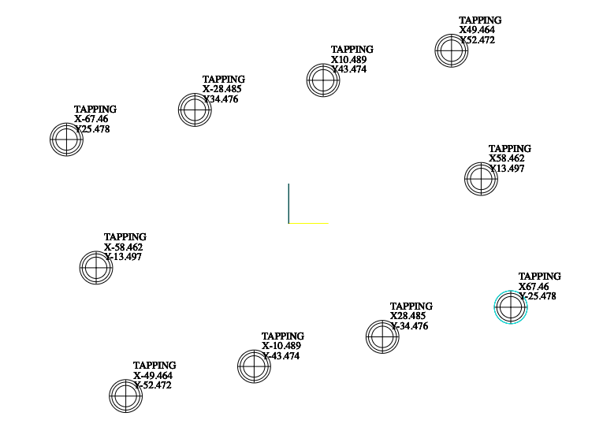

Micro commands
Micro-commands are part of the synthetic sugar for ISO (RS-274) containing special keywords that describe
cycles and special functions that are not normally available in G-code.
Their use greatly simplifies programming and allows to minimize the amount of repetitive code.
Currently, they include keywords such as:
SET
TOOL
CYCLE
PATTERN
POCKET
SLOT
SURFACE
SHOULDER
THREADING
DRILLING
BORING
MIRROR
SHIFT
ZOOM
ROTATE
You can also use micro-commands alternating with regular code or with macros to automate various types of
tasks.
To see how useful micro-commands are, let's see some common examples.
As you know, in order to start performing any task on a CNC machine, you need to insert data about the tool,
approach points, height correction, etc.What usually looks like this:
T1 M6
G00 G54 X0. Y0.
S1200 M3
G43 H1 Z50. M8
Just look, 4 lines of boilerplate code that repeats almost all the time, with most of the only difference
being the tool number and the approach point. Additionally, remember not to forget to insert the decimal
point!Looks like a huge waste of time, right? Of course, you can try to copy and paste, but you still need to
change some data and so on. And here you can see how useful microcommands are.Instead of writing the same
piece of code over and over again, you can use:
TOOL 1 S1200
Amazing, isn't it? This micro-command produces the same code snippet as the output as in the example above.
But what if you want to change some data? How to do it?It's simple, take a look:
TOOL 1 S1200 X100
Is equal to:
T1 M6
G00 G54 X100. Y0.
S1200 M3
G43 H1 Z50. M8
Next one:
TOOL 1 S1200 C0 (COOLANT OFF)
Is equal to:
T1 M6
G00 G54 X0. Y0.
S1200 M3
G43 H1 Z50. M9
As you may have noticed, the name of the address in most cases corresponds to the first letter of a full
English term, which makes it much easier to use.
Let's see another, more extensive example. Mostly in real life, you will have to invoke the tool multiple times and some data changes but others stay the same, such as the approach point. In this case, it is very useful to use the SET keyword to override the default values of other micro-commands.
Let's see another, more extensive example. Mostly in real life, you will have to invoke the tool multiple times and some data changes but others stay the same, such as the approach point. In this case, it is very useful to use the SET keyword to override the default values of other micro-commands.
SET X20 Y35 Z3
TOOL 1 S500
…
TOOL 2 S1200
…
TOOL 3 S250
Is equal to:
T1 M6
G00 G54 X20. Y35.
S500 M3
G43 H1 Z3. M8
…
T2 M6
G00 G54 X20. Y35.
S1200 M3
G43 H2 Z3. M8
…
T3 M6
G00 G54 X20. Y35.
S250 M3
G43 H3 Z3. M8
You are probably already able to notice how micro-commands make the work easier.
Well, it's time for a real example of the program!
In this diagram there are 10 COARSE M10 X 1.5 threads at a 13 degree angle. Of course, holes must be drilled before tapping and chamfered.

In this diagram there are 10 COARSE M10 X 1.5 threads at a 13 degree angle. Of course, holes must be drilled before tapping and chamfered.
Here's what a finished program looks like using micro commands for this example
O0001
SET A13
#100 = 3 (LINES)
#101 = 4 (COLUMNS)
(DRILLING)
TOOL 1 S3067
CYCLE Z-23.981 F613
PATTERN 4 L#100 C#101
(CHAMFERING)
TOOL 2 S523
CYCLE Z-2.25 F107
PATTERN 4 L#100 C#101
(TAPPING)
TOOL 3 S290
CYCLE 4 Z-32 F435
PATTERN 4 L#100 C#101
And as it looked, without using micro commands.
Of course, you can use a subroutine for coordinates, but the code is less readable anyway and requires more
focus when changing any of the contained data.
O0001 ;
( SAFETY LINE ) ;
G00 G17 G21 G40 G53 G80 G90 ;
( END MILL 10X100 ) ;
T1 M06 ;
G54 X0. Y0. ;
S3067 M3 ;
G43 H1 Z50. M8 ;
G98 G81 Z-23.981 R3. K0. F613. ;
X-67.460 Y25.478 ;
X-58.462 Y-13.497 ;
X-49.464 Y-52.472 ;
X-28.485 Y34.476 ;
X-10.489 Y-43.474 ;
X10.489 Y43.474 ;
X28.485 Y-34.476 ;
X49.464 Y52.472 ;
X58.462 Y13.497 ;
X67.460 Y-25.478 ;
G80 Z50. ;
( D6.5 X H50 ) ;
T2 M06 ;
G54 X0. Y0. ;
S523 M3 ;
G43 H2 M8 ;
G98 G81 Z-2.25 R3. K0. F107. ;
X-67.460 Y25.478 ;
X-58.462 Y-13.497 ;
X-49.464 Y-52.472 ;
X-28.485 Y34.476 ;
X-10.489 Y-43.474 ;
X10.489 Y43.474 ;
X28.485 Y-34.476 ;
X49.464 Y52.472 ;
X58.462 Y13.497 ;
X67.460 Y-25.478 ;
G80 Z50. ;
( COARSE M10 X 1.5 ) ;
T3 M06 ;
G54 X0. Y0. ;
S290 M3 ;
G43 H3 M8 ;
G98 G84 Z-32. R3. K0. F435. ;
X-67.460 Y25.478 ;
X-58.462 Y-13.497 ;
X-49.464 Y-52.472 ;
X-28.485 Y34.476 ;
X-10.489 Y-43.474 ;
X10.489 Y43.474 ;
X28.485 Y-34.476 ;
X49.464 Y52.472 ;
X58.462 Y13.497 ;
X67.460 Y-25.478 ;
G80 Z50. ;
M30 ;